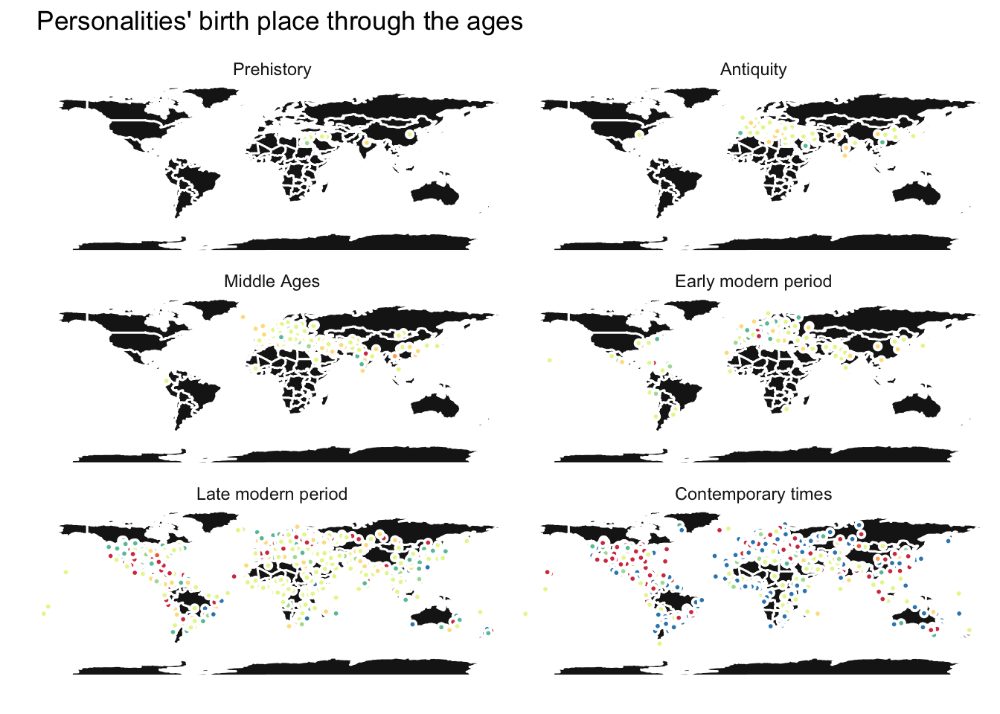
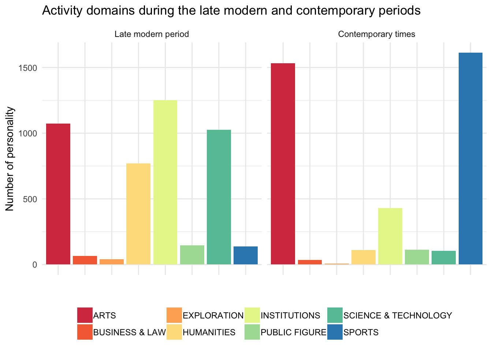
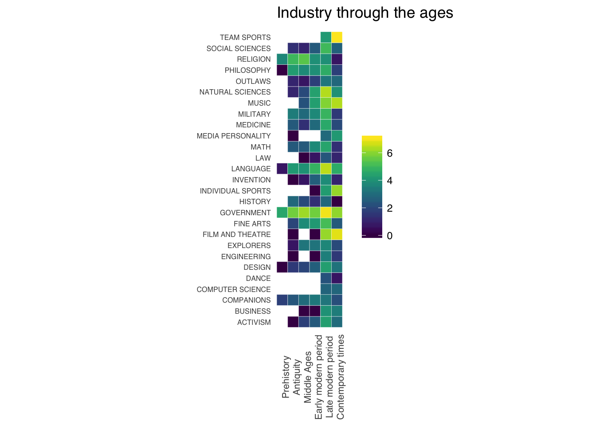

I found this dataset at Harvard Dataverse - a collaboration with Harvard Library, Harvard University IT, and IQSS - about the most famous biographies present on Wikipedia. The Pantheon dataset is “a dataset of individuals that have transcended linguistic, temporal, and geographic boundaries.”
It includes 11,341 biographies present in more than 25 languages on Wikipedia and is “enriched with: (i) manually verified demographic information (place and date of birth, gender); (ii) a taxonomy of occupations classifying each biography at three levels of aggregation; and (iii) two measures of global popularity including the number of languages in which a biography is present in Wikipedia (L), and the Historical Popularity Index (HPI) a metric that combines information on L, time since birth, and page-views (2008-2013).”
This dataset is particularly interesting because it was compared manually (sic!) “to data from the 2003 book, Human Accomplishments, and also to external measures of accomplishment in individual games and sports: Tennis, Swimming, Car Racing, and Chess.”
It ensures that all data correlate highly with individual accomplishment and suggests that measures of global popularity proxy the historical impact of individuals. The complete dataset as well as some more information are freely available to download here.
How to load and clean the data
To load the dataset we can use the curl package and download it directly from the website.
# Some settings
temp <- tempfile()
url <- "http://pantheon.media.mit.edu/pantheon.tsv"
# Then download it
curl_download(url, temp)
# And read it
hallofFame <- read.csv(temp, sep = '\t', header = TRUE, stringsAsFactors = TRUE,
# and because of variable NA strings
na.strings = c("Unknown", "UNK", ""))And take a look a it.
# Not evaluated here, for the sake of space
summary(hallofFame)At first glance it looks pretty good to me, but for three minor points.
head(summary(hallofFame$name), n = 3)
## Alexandre Dumas Andrew Johnson Ben Foster
## 2 2 2One could be suspicious seeing two times the same personality name in the column name. The good news is being French and fond of literature of the 19th century, I know there are indeed two Alexandre Dumas: Alexandre Dumas, père (The Count of Monte Cristo, The Three Musketeers) and Alexandre Dumas, fils (The Lady of the Camellias, which you probably only know via its adaptation for the opera La traviata by Giuseppe Verdi). If this all sounds new to you, I would highly encourage you to stop reading this blog right now and read the books. After all, there are more important things in life that coding!
head(summary(hallofFame$countryName), n = 5)
## UNITED STATES UNITED KINGDOM ITALY United States Germany
## 1680 819 659 489 486Okay, I also see some potential troubles within the contryName column. Strings were correctly converted into factors but it seems we have two different spellings for each countries. United States is written both UNITED STATES and United States. Problem which can be simply circumvented using the toupper() function:
hallofFame$countryName <- toupper(hallofFame$countryName)Finally, the birthyear column is not numeric but was converted into factors.
class(hallofFame$birthyear)
## [1] "factor"This can be corrected - although I’m assuming that it might be a bit of an overkill.
hallofFame$birthyear <- as.numeric(levels(hallofFame$birthyear)[hallofFame$birthyear])head(summary(hallofFame$birthyear))
## Min. 1st Qu. Median Mean 3rd Qu. Max.
## -3500.000 1791.000 1919.000 1658.334 1961.000 2005.000Alright, I guess that’s it!
We have coordinates, so why not use them
Well, it has been some years now since I’ve visited a history class for the last time. Anyway, I can very precisely remember that prehistory is not well defined but Europe before the 8th and 7th centuries BC is largely proto-historical. The antiquity abruptly ended in 472 with the fall of the Roman Empire. After what knights were savagely fighting in jousts to impress young ladies during the Middle Ages until Christopher Columbus discovered the New World in 1472. The modern period which followed can be roughly divided into early modern period, ending in 1789 with the French revolution and late modern period, ending in 1945 at the end of WWII. No, actually I’m kidding. I had a look at Wikipedia for all this. Well not for the French revolution! That one I knew; told you I’m French. Also, I’m relatively confident that the contemporary times didn’t ended yet. Wikipedia and I agree on that.
So let’s divide into historical eras and plot using the birth places:
# Divide into historical eras based on birth dates
hallofFame$era <- ifelse(hallofFame$birthyear < -800, "Prehistory",
ifelse(hallofFame$birthyear %in% -800:475, "Antiquity",
ifelse(hallofFame$birthyear %in% 476:1491, "Middle Ages",
ifelse(hallofFame$birthyear %in% 1492:1788, "Early modern period",
ifelse(hallofFame$birthyear %in% 1789:1944, "Late modern period",
ifelse(hallofFame$birthyear > 1945, "Contemporary times", NA))))))
# Order the factor levels
hallofFame$era <- factor(hallofFame$era,
levels = c("Prehistory", "Antiquity", "Middle Ages",
"Early modern period", "Late modern period",
"Contemporary times", NA))library(ggplot2)
library(RColorBrewer)
library(maps)
ggplot() + geom_polygon(data = map_data("world"),
aes(x = long, y = lat, group = group),
colour = "white", fill = "grey10") +
geom_point(data = hallofFame[which(hallofFame$era != "NA"),],
aes(x = LON, y = LAT, fill = domain),
shape = 21, color = "white", stroke = 1, alpha = 1, size = 1) +
theme_minimal() +
scale_fill_brewer(palette="Spectral") +
theme(axis.ticks = element_blank(), axis.text.x = element_blank()) +
theme(axis.ticks = element_blank(), axis.text.y = element_blank()) +
scale_x_discrete(name = "") +
scale_y_discrete(name = "") +
theme(legend.title = element_blank()) +
ggtitle(expression(paste("Personalities' birth place through the ages"))) +
theme(legend.position = "none") +
facet_wrap(~era, ncol = 2)
Pretty neat! It appears there were not that many celebrities in the early ages. I guess there was no point to be famous at that time, Wikipedia hasn’t been invented. Personalities in the prehistory nicely concentrate in the Middle East, only spreading out toward Europe during the antiquity. No big change during the Middle Ages, but with the early modern period begins the colonization of the New World. The population of celebrities clearly explodes in the late modern and contemporary periods. The big difference being the domain of activity: humanities, institutions, and science & technology being largely over-represented during the late modern period, whereas they are dramatically shrinking in the contemporary times. Arts are well represented during both eras, sports notably booming nowadays.
ggplot(data = hallofFame[which(hallofFame$era == "Late modern period" |
hallofFame$era == "Contemporary times"),],
aes(x = domain, fill = domain)) +
geom_bar() +
ggtitle(expression(paste("Activity domains during the late modern and contemporary periods"))) +
theme_minimal() +
scale_fill_brewer(palette = "Spectral") +
theme(axis.text.x = element_blank()) +
scale_x_discrete(name = "") +
scale_y_continuous(name = "Number of personality") +
theme(legend.title = element_blank()) +
theme(legend.position = "bottom") +
facet_wrap(~era, ncol = 2)
Is data scientist a wise career choice?
There are much more information included in the dataset than personalities’ place of birth and we can have a closer look at the evolution of industry through the ages. But before doing that, we have to reorganize our data. We need to create a new dataframe calculating the number of personality in each industry per era. Since late modern and contemporary periods concentrate around 75% of all personalities, it is necessary to apply a logarithmic normalization.
library(plyr)
industry <- ddply(hallofFame, .(era, industry), summarise,
ind = log(length(industry)))We now can plot a heatmap of the results.
library(ggthemes)
library(viridis)
ggplot(data = industry[which(industry$era != "NA"),], aes(x = era, y = industry, fill = ind)) +
geom_tile(color = "white", size = 0.1) +
scale_fill_viridis(name = "") +
theme_tufte(base_family = "Helvetica") +
coord_equal() +
labs(x = NULL, y = NULL, title = expression(paste("Industry through the ages"))) +
scale_x_discrete(expand = c(0, 0)) +
theme(axis.text = element_text(size = 6)) +
theme(legend.title = element_text(size = 8)) +
theme(legend.position = "right") +
theme(axis.ticks = element_blank(), axis.text.x = element_text(angle = 90, size = 8))
Again, same conclusion: sports (team sports, but also individual sports) are booming nowadays. Logically, only a very few careers were available in the prehistory: religion, philosophy, language, government, and … design! Well that’s a surprise. How can that be?
hallofFame[which(hallofFame$era == "Prehistory" & hallofFame$industry == "DESIGN"),2:6]
## name numlangs birthcity birthstate countryName
## 654 Imhotep 56 Memphis <NA> EGYPTImhotep, from Memphis (like Elvis!).
hallofFame[which(hallofFame$era == "Prehistory" & hallofFame$industry == "DESIGN"),14:16]
## occupation industry domain
## 654 ARCHITECT DESIGN ARTSWell, sure some (if not all) of his buildings survived until the present day. I guess it’s indeed a fit!
Some other industries popped up only recently (well not literally), like dance (but I’m not sure that’s totally true) and computer science. There are also some nice patterns in the data. Like religion, which seems to decline though the ages, whereas social and natural sciences are growing. I wonder if there is a correlation there. But I don’t think that’s a question we can answer using these data. Government seems to be always in demand; business is not that new, but on the contrary continuously growing since the modern times. Military and philosophy both suffer recent reverses. Law grows slowly, but not as fast as outlaw!
To be continued
I found these data really amazing and there certainly is a lot more one can extract from them. After all I didn’t even have a look at the global popularity scoring yet. We have information about the number of language in which a biography is present in Wikipedia, and an historical popularity index we could use in combination with the nationality of each personality. We also have more detailed information on the occupation (88 levels), which can be used to analyze more precisely industries. On the other hand, occupations through the ages are even more variable. As a matter of fact PSYCHOLOGIST was notably not available before Freud was born and PORNOGRAPHIC ACTOR was not that common in the antiquity (wasn’t it?). Next time we will therefore concentrate on the modern periods. So as not to leave you wondering, there is a COMPUTER SCIENTIST occupation factor level. Next time we will definitively answer the question: data scientist, a wise career choice?